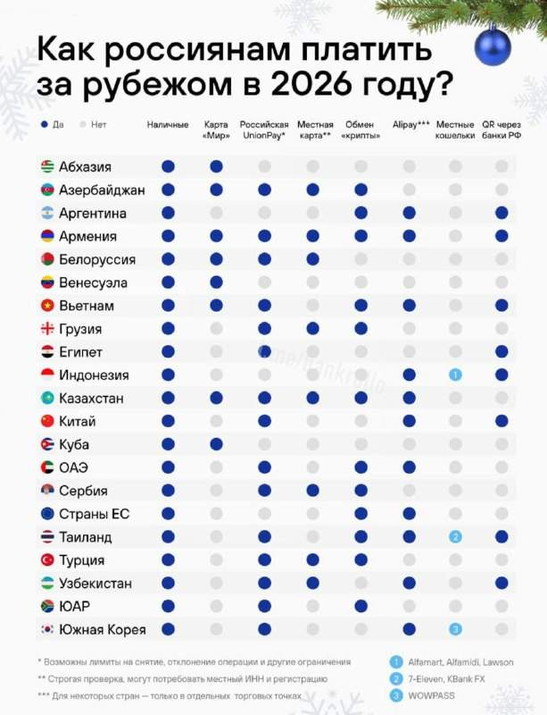
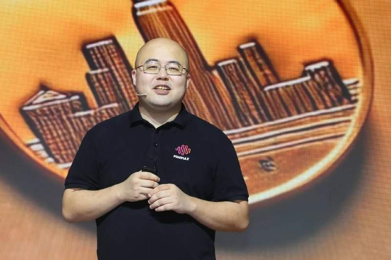
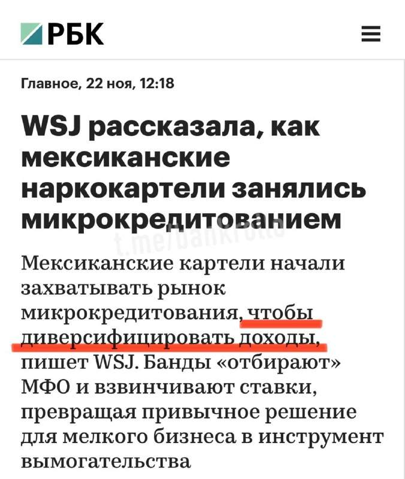

Путин мой друг — Трамп. @bankrollo
Путин мой друг — Трамп. @bankrollo
Превращение в индуса избавляет от бана в Claude. Китайцы начали массово делать фейковые паспорта жителей Индии и предоставлять их на проверку Anthropic. Паспорта генерируют в китайской нейронке вроде Qwen Image, попросив изменить данные с китайских на индийские. По какой-то причине Claude не строго проверяет документы индусов, и риск бана сильно ниже. @bankrollo
Сирена в Калининградской включилась из-за «подозрительного объекта со стороны Литвы», — губернатор. @bankrollo https://t.me/bankrollo/70461 Литва отвергла причастность к инциденту на границе с Калининградской областью. «Литовская Республика никогда не разрешала использовать свое воздушное пространство для атак на цели на территории Российской Федерации, в том числе и в данном случае», — заявил глава МИД Литвы Кястутис Будрис. @bankrollo
GTA VI способна довести россиян до развода, считают в Союзе отцов. Если мужчина играет все выходные, забывая о жене, детях и домашних делах, это может привести к семейным конфликтам. Эксперты призывают не превращать виртуальный мир во вторую жизнь и уделять больше времени близким. @bankrollo

Россиянам стало проще расплачиваться за границей. @bankrollo
В ДНР мужчина поднял с земли пятитысячную купюру и оказался в больнице с сильным отравлением. Предположительно, на банкноте находилось неизвестное опасное вещество. Минздрав ДНР уже призвал жителей не поднимать с земли деньги и другие подозрительные предметы. @bankrollo
Мошенники обманывают детей в Roblox через фишинговые страницы и Telegram-боты, сообщили в F6. Кроме того, они предлагают пользователям онлайн-платформы взломать аккаунт обидчика, а также пытаются обманом заманить детей в возрасте 8-14 лет на «бесплатный VIP-сервер». @bankrollo

Основатель одной из самых быстрорастущих компаний в сфере ИИ MiniMax перестал быть миллиардером. Активы 37-летнего Янь Цзюньцзе на пике оценивались в $12,6 млрд, но к ноябрю из-за падения акций состояние сократилось до менее чем $1 млрд. С марта акции упали более чем на 90%, опустившись ниже цены размещения. К ноябрю 2026 года рыночная капитализация сократилась с пиковых 410 млрд до примерно 44 млрд гонконгских долларов. @bankrollo
Самолет-разведчик НАТО заметили в районе Калининградской области — ТАСС. @bankrollo
Король Таиланда неожиданно заехал в магазин после велопрогулки и поставил всех на колени. @bankrollo
Пассажиров бизнес-класса в России поили палёным лимончелло. Напиток разливали в подпольной лаборатории прямо рядом с аэропортом Шереметьево — ТАСС. @bankrollo

Мексиканские наркокартели начали диверсифицировать бизнес. @bankrollo
В Госдуме хотят запретить «Беременна в 16». Передачу надо убрать из всех эфиров, чтобы транслировать только образ счастливой семьи, считает депутат Нина Останина. @bankrollo
Tesla создала вид от третьего лица для управления машиной. Камеры и нейросети превращают любую поездку в видеоигру: убирают туман, показывают маршрут со стрелками и даже паркуют авто по тапу. @bankrollo
Россияне массово покупают премиальные авто. С начала года доля продаж таких машин выросла до 10%. Так, Audi стали покупать сразу в четыре раза чаще. Дилеры объясняют это так: если у россиянина есть 10 млн рублей, он скорее купит трёхлетний BMW X5, чем китайскую электричку. Спрос в премиуме будет расти и дальше из-за крепкого рубля и ещё одного повышения утильсбора с 1 января. @bankrollo
В США второй авиасбой за месяц. Из-за сбоя авиакомпании Delta Air Lines по всей стране задержали и отменили до 3,5 тысяч рейсов. @bankrollo
В России начнут строить отдельные города для пожилых. Межчеловеческие связи ослабевают, а демография падает, поэтому за стариками будет некому ухаживать, объяснил футуролог НИЯУ МИФИ. Чтобы оптимизировать уход за пожилыми людьми, государству будет проще построить для них отдельные города. Уже сейчас в Москве и Подмосковье проживает больше 5 млн пенсионеров, и их число будет только расти. @bankrollo
В Москве уже во вторник начнётся самый сильный снегопад сезона — РАН. Снег будет идти почти сутки, с обеда вторника до среды. @bankrollo